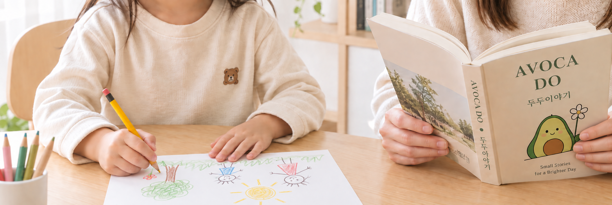

AVOCADO.
좋은 생각을
살아보는 곳.
조금 더 나은 마음, 조금 더 나은 하루를 위해.
작은 생각이 만드는 큰 변화를 믿습니다.

LATEST ARTICLES
GOOD THOUGHTS. A KINDER LIFE.LIFE / PSYCHOLOGY왜 좋은 말보다
왜 좋은 말보다
나쁜 말이 오래 기억날까?
칭찬은 여러 번 들어야 믿으면서,
비난은 한 번에 믿는 이유.

GROW / KIDSAI 시대,
AI 시대,
우리 아이를
잘 키운다는 것
부모는 미래를 가르쳐야 하는데,
가진 자료는 과거뿐입니다.
이 주제의 글은 준비 중입니다.
작은 생각이
더 좋은 내일을 만듭니다.